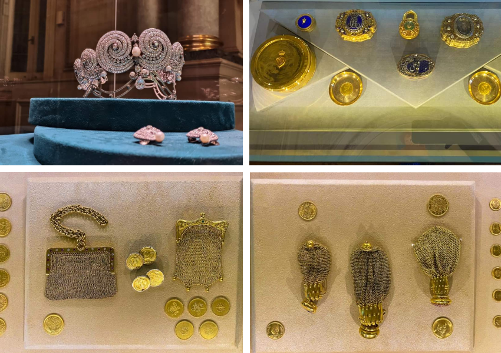

٧ - متحف المجوهرات الملكية بالأسكندرية
وقد تم استخدام القصر كاستراحة لرئاسة الجمهورية حتى تحول إلى متحف بقرار جمهوري عام 1986م وقد بني هذا القصر (متحف المجوهرات الملكية) على طراز المباني الأوربية من الناحية المعمارية وهو يتكون من جناحين شرقي وغربي يربط بينهما ممر مستعرض ويتكون كل من الجناح الشرقي والجناح الغربي من طابقين وبدروم كما يحيط بالمبنى حديقة تمتلئ بالنباتات والزهور وأشجار الزينة.
يتكون المتحف من طابقين
كل طابق يضم عدد من القاعات تعرض مجموعات متنوعة من المجوهرات، أدوات الزينة، أدوات المائدة والكتابة الخاصة بأمراء وأميرات الأسرة العلوية الذين حكموا مصر في الفترة من عام ١٨٠٥ (حين تولى محمد علي باشا حكم مصر ) وحتى عام ١٩٥٢ ( وقت قيام ثورة يوليو ).
يبلغ العدد الإجمالي لتلك المجوهرات (١٠٤٥) ألف وخمس وأربعون قطعة مجوهرات لا تقدر بثمن من تصميم أشهر بيوت المجوهرات العالمية آنذاك مثل : ڤان كليف آند أرپلز Van Cleef and Arples، ديور Dior، بوشرون Boucheron
محتويات المتحف
ويضم المتحف مجموعة من أروع وأجمل المجوهرات الملكية والتي كان يرتديها ويتزين بها أفراد الأسرة العلوية المالكة في مصر ومنها مجوهرات الملك فؤاد والملك فاروق وزوجاته والأمراء والأميرات من العائلة المالكة.. ولذلك فهو يُعرف باسم متحف المجوهرات الملكية. ويضم المتحف 11 ألفاً و500 قطعة تخص أفراد الأسرة المالكة. وقد تم تقسيم القصر إلى عشر قاعات تضم مجموعات من التحف والمجوهرات التي تخص أفراد أسرة محمد علي ومن أهمها:
مجموعة تخص مؤسس الأسرة العلوية «محمد علي» من بينها علبة نشوق من الذهب المموه بالمينا عليها اسمه «محمد علي»
مجموعة الأمير محمد علي توفيق التي تشمل 12 ظرف فنجان من البلاتين والذهب ونحو 2753 فصاً من الماس البرنت والفلمنك وحافظة نقود من الذهب المرصع بالماس..بالإضافة إلى ساعة جيب خاصة بالسلاطين العثمانيين.
ومن عصر الخديوي سعيد باشا توجد مجموعة من الوشاحات والساعات الذهبية والأوسمة والقلائد المصرية والتركية والأجنبية مرصعة بالمجوهرات والذهب ونحو أربعة آلاف من العملات الأثرية المتنوعة. مجموعة تخص مؤسس الأسرة العلوية محمد علي من بينها علبة نشوق من الذهب المموه بالمينا عليها اسمه «محمد علي».
ساعات من الذهب وصور بالمينا الملونة للخديوي إسماعيل والخديوي توفيق.
مجموعة تحف ومجوهرات الملك فؤاد وأهمها:
مقبض من ذهب مرصع بالماس.
ميداليات ذهبية ونياشين عليها صورته.
تاج من البلاتين المرصع بالماس والبرلنت لزوجته الأميرة شويكار.
مجموعة مجوهرات الملكة نازلي من أهمها حلية من الذهب مرصعة بالماس البرلنت.

مجموعة تحف ومجوهرات الملك فاروق والملكة نازلي ومن أهمها:
شطرنج من الذهب المموه بالمينا الملونة المرصع بالماس.
صينية ذهبية عليها توقيع «110 من الباشوات».
عصا المارشاليه من الابنوس والذهب.
طبق من العقيق مهدى من قيصر روسيا.
مجموعة الملكة فريدة زوجة الملك فاروق الأولى ومن أهم قطعها:
تاج الملكة من البلاتين المرصع بالماس البرلنت وتوكه من الماس البرلنت.
دبابيس صدر من الذهب والبلاتين المرصع بالماس البرلنت والفلمنك.
مجموعة الملكة ناريمان زوجة الملك فاروق الثانية ومن أهم قطعها:
أوسمة وقلادات وميداليات تذكارية.
مسطران وقصعة من الذهب استخدمت في وضع حجر الأساس للمشروعات.
مجموعات الأميرات فوزية أحمد فؤاد وفائزة أحمد فؤاد: «أ» مجموعة من الاساور والتوك ودبابيس الصدر من أهمها:
توكة من البلاتين المرصع بالماس عليها اسم «فوزية».
عقد ذهب مرصع بالماس البرلنت واللؤلؤ «فائزة».
مجموعة الأميرات سميحة وقدرية حسين كامل
مجموعة من ساعات الجيب من الذهب المرصع بالماس البرلنت والفلمنك وسوار ذهب مرصع بالماس البرلنت والفلمنك واللؤلؤ.